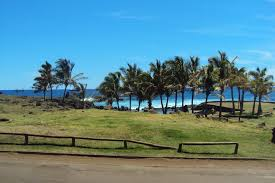

- Rano Raraku (volcano)
- Ahu Tongariki (stone statues)
- Anakena (Beach)
- Rano Kau (volcano and cliff)

- Ahu Akivi
- Ahu Tahai (archeological site)
"Panda Travel Agency"
555-905-1982
Easter Island is located in Polynesia. It is a territory of Chile. Easter Island is natively known as Rapa Nui. It is most famous for its archaeological sites, specifically the Moai statues. The Moai statues are carved human figures with enlarged heads. They were constructed by the native inhabitants during the 13th and 16th centuries. Additionally, at the Southern tip of the island, lies the inactive volcano Rano Kau.
The landscape of the island emcomapsses both grass and lava fields, white-sand beaches, and cliff that protrude over the sea.

Many popular activities include:

Sarah Jane (Paris, France)
✮✮✮✮ reviewed February --, 2018
FANTASTIC, MAGICAL PLACE TO VISIT
If you have the opportunity to visit Easter Island with a knowledgeable, enthusiastic guide such as we had, you will be entranced by this magical place. Do NOT miss it.
Frank (Delaware, USA)
✮✮✮✮✮ reviewed January --, 2018
THE BEST OF ALL IN EASTER ISLAND
The best part of easter island it was Rano Raraku! It is amazing to see that many Moai all together. You will be able to see them at both sides of the volcano, the only downside is that some parts are closed and you cant see them anymore, like the Moai on the internal part of the volcano. Take your time here, and visit at the sunset
Lauren (California, USA)
✮✮✮✮✮ reviewed December --,2018
HIGHLY RECOMMEND
A fabulous place to stay! Great location to relax. Amazing hotels. So many exciting things to see and do!